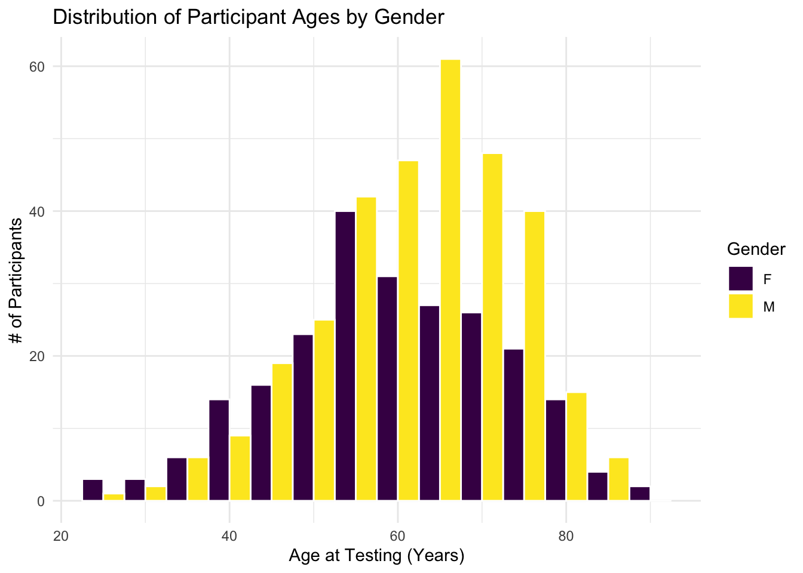

Copy the research questions from part three during the in class exercise to your file.
Can personalized language modeling improve communication between people with speech aphasia and speech-based AI assistants?
How similar are neural network classification errors to human classification errors? Does nn confidence reflect (before/after calibration) predict human difficulty with tasks?
Can a model analyze the brain’s processing of emotion to detect network differences in Major Depressive Disorder (or others)?
Load at least two datasets. Coordinate your work with your teammates to make sure you work on separate datasets. If there are datasets you tried to load that didn’t work or seem interesting, name the dataset and describe the experience. Ask your teammate if they have ideas to get it working.
https://talkbank.org/aphasia/
https://osf.io/dm73j
For each dataset
library(readxl)library(tidyverse)
── Attaching core tidyverse packages ──────────────────────── tidyverse 2.0.0 ──
✔ dplyr 1.2.1 ✔ readr 2.2.0
✔ forcats 1.0.1 ✔ stringr 1.6.0
✔ ggplot2 4.0.3 ✔ tibble 3.3.1
✔ lubridate 1.9.5 ✔ tidyr 1.3.2
✔ purrr 1.2.2
── Conflicts ────────────────────────────────────────── tidyverse_conflicts() ──
✖ dplyr::filter() masks stats::filter()
✖ dplyr::lag() masks stats::lag()
ℹ Use the conflicted package (<http://conflicted.r-lib.org/>) to force all conflicts to become errors
AphasiaBank/TalkBank was made by researchers at Carnegie Mellon University in collaboration with contributing clinical researchers from various different speech-language pathology research labs across institutions.
Data description - who’s in it and what’s being measured?
The data contains demographic and clinical history of participants with aphasia caused by stroke. The variables measure age, gender, lesion side (left vs right hemisphere), lesion location, lesion etiology, stroke occurance, and diagnostic aphasia classification by a Boston clinician.
Data limitations (eg, are the data recent? do they contain all the variables you might want? Are there more data you will need to calculate or collect?)
One limitation would be that the dataset is recorded from a single assessment time rather than tracking longitudinal trajectories with follow-up visits. Another limitation would be some of the participants who have unclassified (NCL) or missing (U/NA) details which reduces the amount of clean and complete data.
Show the variable names. Describe the most useful / interesting ones.
Participant ID - the unique alphabetical/numberic identifier of the participants
Aphasia Type - the clinical classification of Aphasia subtype (e.g, Broca’s, Wernicke’s, Global).
Lesion Side - the hemispheric side/location affected by stroke (left, right, or both sides).
Lesion Location - description of the affected brain location
colnames(demo_data)
[1] "Participant ID"
[2] "Test Date"
[3] "Informant Relationship to Participant"
[4] "DOB"
[5] "Age at Testing"
[6] "Gender"
[7] "Race"
[8] "Handedness"
[9] "Adequate Vision"
[10] "Adequate Hearing"
[11] "Years of Education"
[12] "Occupation"
[13] "Employment Status"
[14] "Birth Country"
[15] "Years in US (or current home country)"
[16] "Language Status"
[17] "Other Languages, in order learned"
[18] "Primary Language"
[19] "Aphasia Etiology"
[20] "Other Aphasia Etiology"
[21] "Aphasia Duration"
[22] "Aphasia Category -- Clin Impression"
[23] "Aphasia Type --Clin Impression -- Boston"
[24] "Aphasia Type -- Clin Impression -- Luria"
[25] "Basis for Clinician's Classif/Type"
[26] "Apraxia of Speech"
[27] "Dysarthria"
[28] "Depression"
[29] "Depression Evidence"
[30] "Physical Status"
[31] "Years SLP Tx"
[32] "Date of Most Recent Stroke"
[33] "Lesion Side"
[34] "Lesion Etiology"
[35] "Lesion Location"
[36] "Lesion Location Basis"
[37] "Lesion Description"
[38] "Hx Previous Stroke"
[39] "Date of Previous Stroke"
[40] "Lesion Side (previous stroke)"
[41] "Date of Other Previous Stroke (if multiple)"
[42] "Lesion Side (other previous stroke)"
[43] "Hx Other Neurological Conditions"
[44] "Specify Neurological Conditions"
[45] "General Health"
[46] "Examiner's Yrs Clin Aph Exp"
[47] "Examiner's Relationship to Participant"
[48] "Duration of Relationship"
[49] "Knows Cinderella"
[50] "Examiner's Comments"
[51] "No video/audio available"
[52] "Repeat discourse protocol administrations?"
Visualize one interesting variable.
demo_data$`Age at Testing`<-as.numeric(demo_data$`Age at Testing`)ggplot(demo_data, aes(x =`Age at Testing`, fill = Gender)) +geom_histogram(binwidth =5, color ="white", position ="dodge") +theme_minimal() +scale_fill_viridis(discrete=TRUE,option="viridis") +labs(title ="Distribution of Participant Ages by Gender",x ="Age at Testing (Years)",y ="# of Participants" )

Indicate some variable or variables that can connect at least two of the datasets in a join. You do not need to actually do the join, just figure out which variables would be helpful.
To join the demo-data.xlsx and english-results-data.xlsx datasets, the main link between them would be the Participant ID variable.
This would allow each participant to link their demographic and clinical profiles to their performance on the conducted assessments (e.g., WAB, AQ, Fluency, Naming, etc., scores).
Remember to include a clear AI statement.
Submit your rendered/Knit HTML to Moodle. Be ready to present your findings in class.